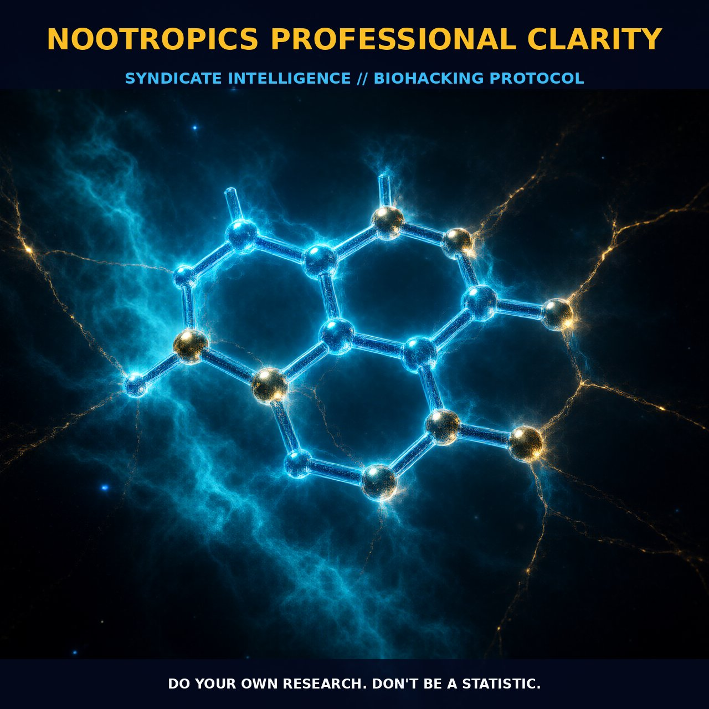

Enhancing Cognitive Function with Nootropics

1. The Mechanism of Nootropics
Nootropics are compounds specifically designed to enhance cognitive functions such as memory, focus, and creativity. The term 'nootropic' was coined by Corneliu Giurgea in the early 1970s to describe substances that improve cognitive function while maintaining the brain's homeostatic balance.
Nootropics operate through a variety of mechanisms, including modulating neurotransmitter systems, enhancing blood flow to the brain, and protecting neurons from oxidative stress. One of the primary targets for nootropics is the cholinergic system, as acetylcholine plays a crucial role in cognitive processes such as memory and learning. By boosting cholinergic activity, nootropics can enhance synaptic plasticity and neural communication, leading to improved cognitive performance.
Additionally, nootropics may influence other neurotransmitter systems such as dopamine and serotonin, further contributing to their cognitive benefits. The mechanism of action for nootropics is often multifaceted, involving a range of biological pathways. Many nootropics exert their effects through the modulation of synaptic function, particularly at the level of the NMDA receptor. NMDA receptors are involved in the regulation of synaptic plasticity and are critical for learning and memory formation.
Nootropics like piracetam have been shown to enhance the sensitivity of NMDA receptors, thereby promoting neural communication and synaptic integration. Moreover, some nootropics interact with other neurotransmitter receptors, such as GABA and glutamate, further modulating neural activity and cognitive processes. This complex interplay of mechanisms allows nootropics to provide a broad range of cognitive benefits, from improved focus and concentration to enhanced memory and mental clarity.
2. Biological Leverage of Nootropics
Nootropics exert their effects by leveraging several key biological pathways, including neurotransmitter modulation, vascular effects, and neuroprotective mechanisms. One of the primary pathways involves the enhancement of cholinergic activity, which is critical for cognitive functions such as memory and learning. By increasing the availability of acetylcholine or its precursors, nootropics can boost cholinergic neurotransmission and support synaptic plasticity.
Enhancing cholinergic activity can lead to improved cognitive performance, particularly in tasks requiring memory and attention. Another important pathway involves the modulation of NMDA receptors, which play a pivotal role in synaptic plasticity and learning. Many nootropics enhance the sensitivity of NMDA receptors, thereby promoting neural communication and synaptic integration. This is particularly beneficial for cognitive functions such as memory formation and retrieval.
NMDA receptor modulation can also influence other neurotransmitter systems, such as glutamate and GABA, further contributing to the overall cognitive benefits of nootropics. Additionally, nootropics may enhance cerebral blood flow, which can improve oxygen and nutrient delivery to the brain, supporting cognitive function and neural health. Nootropics also exhibit neuroprotective properties, shielding neurons from oxidative stress and other forms of damage.
This is crucial for maintaining cognitive function, especially in aging individuals or those with cognitive decline. By reducing oxidative stress, nootropics can help preserve the integrity of neuronal structures and promote healthy brain function. Furthermore, nootropics can influence the production of brain-derived neurotrophic factor (BDNF), a protein that supports the growth and survival of neurons. Increased BDNF levels can contribute to neurogenesis and synaptic plasticity, enhancing cognitive performance and resilience.
3. Tactical Implementation of Nootropics
When implementing nootropics for cognitive enhancement, it is crucial to consider the specific compounds, their dosages, and how they can be effectively combined into a 'stack.' A nootropic stack typically consists of multiple nootropics that work synergistically to produce a broader range of cognitive benefits. For instance, combining a cholinergic nootropic like centrophenoxine with an NMDA modulator like piracetam can enhance both synaptic plasticity and neural communication.
Additionally, incorporating antioxidants like alpha-lipoic acid or curcumin can provide neuroprotective effects, supporting long-term cognitive health. Timing is another critical factor in the effective use of nootropics. Most nootropics require regular and sustained use to achieve optimal results, rather than a single dose providing immediate effects. Typically, it is recommended to start with low-to-moderate amounts and gradually increase the dosage as needed, allowing the body to adapt to the nootropics.
For example, starting with a dose of centrophenoxine at 500mg and gradually increasing to 1-2 grams per day can help optimize cognitive function without causing adverse effects. Similarly, piracetam can be started at 400mg and increased to 1600mg, with the dosage adjusted based on individual response and tolerance. Stacking nootropics effectively requires careful consideration of the timing and sequence of intake.
For instance, combining a cholinergic nootropic with a BDNF promoter like vitamin B12 or DMAE can enhance both synaptic plasticity and neurogenesis, supporting long-term cognitive benefits. Additionally, integrating a vasodilator like vinpocetine with a neuroprotective nootropic like acetyl-L-carnitine can further support cerebral blood flow and neuronal health. By strategically combining nootropics and adjusting dosages over time, biohackers can maximize cognitive performance and maintain optimal brain function.
Prostar Life Hack
Combine a cholinergic nootropic like centrophenoxine with an NMDA modulator like piracetam to enhance both synaptic plasticity and neural communication. Additionally, incorporate antioxidants like alpha-lipoic acid or curcumin for neuroprotective effects, supporting long-term cognitive health.
[ AUTHOR: LEAD TECHNICAL RESEARCHER ]